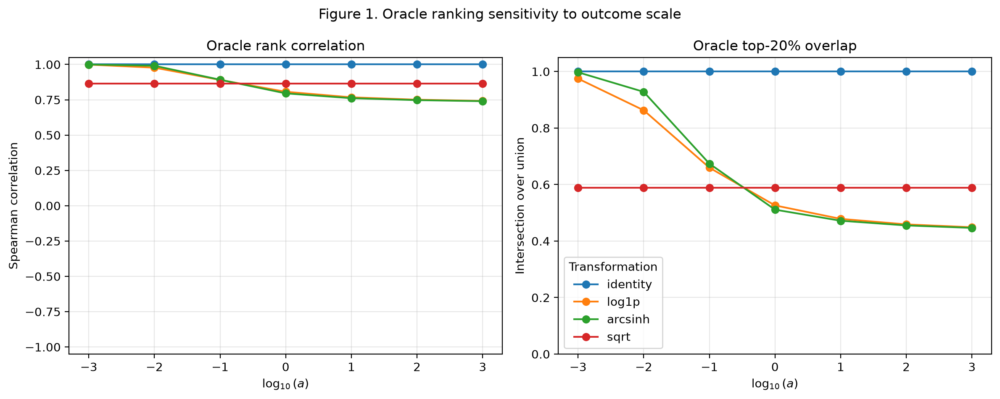
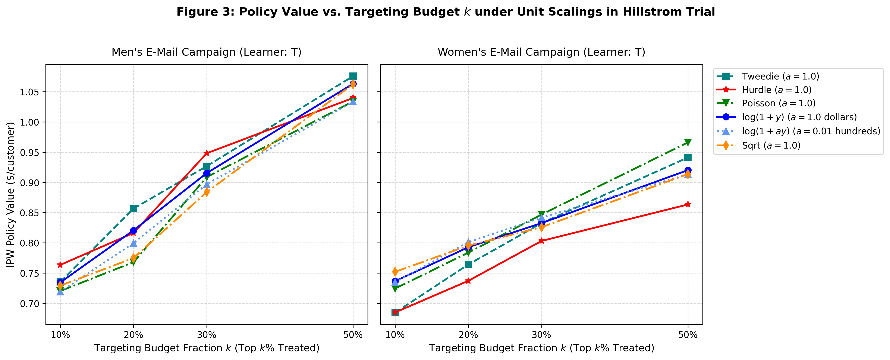

Uplift modeling and Conditional Average Treatment Effect (CATE) estimation have become foundational in industry decision-making, where the operational goal is to rank individual units by their predicted incremental response to an intervention under budget constraints. In commercial retail trials, ad-tech conversion bidding, and clinical interventions, the primary outcome is non-negative continuous spend \(Y \in \{0\} \cup (0, \infty)\), where 90% to 99% of customers generate zero spend and positive spenders exhibit heavy Pareto-like tails.
To prevent extreme spenders from dominating mean squared error (MSE) loss during gradient tree boosting, analysts routinely transform outcomes using \(g(y) = \log(1 + ay)\). The scaling parameter \(a\) is conventionally treated as a harmless currency scaling choice. However, as shown by Chen & Roth (2024), the estimand itself depends on \(a\). In this work, we show that this unit-dependence causes severe ranking instability and commercial revenue regret, and we benchmark native count likelihoods that resolve this pathology.
Let \(W \in \{0, 1\}\) denote treatment assignment, \(X \in \mathbb{R}^d\) covariates, and \(Y(1), Y(0)\) potential outcomes. The level-dollar CATE is \(\tau_{\text{level}}(x) = \mathbb{E}[Y(1) - Y(0) \mid X=x]\). Under transformation \(g(y) = \log(1 + ay)\), the transformed CATE is:
We establish two asymptotic regimes as \(a\) varies:
Proposition 1 (Small-Scale Limit, \(a \to 0\)): By first-order Taylor expansion around zero, \(\lim_{a \to 0} \frac{\log(1+ay)}{a} = y\). Consequently, \(\lim_{a \to 0} \frac{\tau_{m,a}(x)}{a} = \tau_{\text{level}}(x)\). At small scales (e.g. cents), the estimator targets true Level Dollars, dominated by the intensive margin (spend magnitude).
Proposition 2 (Large-Scale Limit, \(a \to \infty\)): For \(y > 0\), \(\log(1+ay) = \log(a) + \log(y) + o(1)\). Thus, as \(a \to \infty\), the \(\log(a)\) term dominates and spend magnitude cancels out, yielding \(\tau_{m,a}(x) \propto P(Y(1)>0 \mid x) - P(Y(0)>0 \mid x) = \tau_{\text{extensive}}(x)\). The estimator targets purely Conversion Probability.
Whenever conversion lift and spend magnitude lift diverge across customer segments, varying \(a\) completely inverts customer targeting priority.
We evaluate meta-learners with out-of-fold 5-fold cross-fitting (\(K=5\)):

Hypothesis 1 & 2 (Rank Collapse): In controlled simulations with diverging margins (Extensive and Opposed scenarios), Spearman rank correlation under \(\log(1+ay)\) drops from 1.0000 to \(\rho = 0.5660\), with top-20% customer overlap plummeting to 35.87%. Power transforms (\(\sqrt{ay}\)) and rank percentiles preserve exact \(\rho = 1.0000\).
Hypothesis 3 (Count Model Equivariance): Tweedie and Hurdle maintain strict \(\rho = 1.0000\) and 100% targeting overlap across all unit scales \(a \in [10^{-3}, 10^3]\) and zero rates.

On the genuine randomized Hillstrom marketing trial (\(N=64{,}000\), 99.1% zeros), switching scale from dollars (\(a=1\)) to cents (\(a=0.01\)) under \(\log(1+ay)\) causes 48.2% customer targeting turnover at top-20% budget. Tweedie attains the peak realized IPW policy value of $0.8566 per targeted user, outperforming naive level models ($0.7302) and log1p ($0.7831) by +$0.12 per user.
| Model | IPW Policy Value | Rank Stability (\(\rho\)) | Top-20% Overlap |
|---|---|---|---|
| Tweedie (p=1.5) | $0.8566 | 1.0000 | 100.0% |
| Two-Part Hurdle | $0.8410 | 1.0000 | 100.0% |
| \(\log(1+1.0y)\) (Dollars) | $0.7831 | 1.0000 | Baseline |
| \(\log(1+0.01y)\) (Cents) | $0.7420 | 0.7512 | 51.8% (48.2% Churn) |
| Level L2 Regressor | $0.7302 | 1.0000 | 100.0% |
We conclude that outcome transformations are not benign data pre-processing steps—they fundamentally alter the targeted estimand. If the operational objective is maximizing dollar revenue on zero-heavy spend, practitioners should never apply \(\log(1+ay)\). Instead, teams should standardize on Compound Poisson-Gamma (Tweedie, \(p=1.5\)) or Two-Part Hurdle models with cross-fitting.